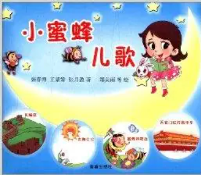
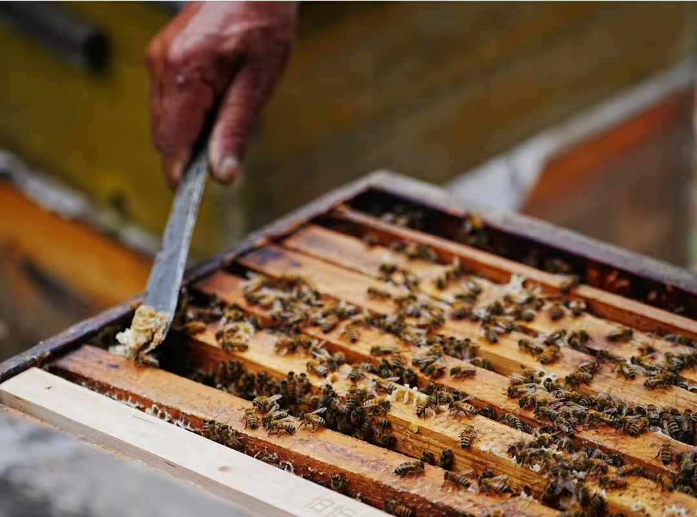
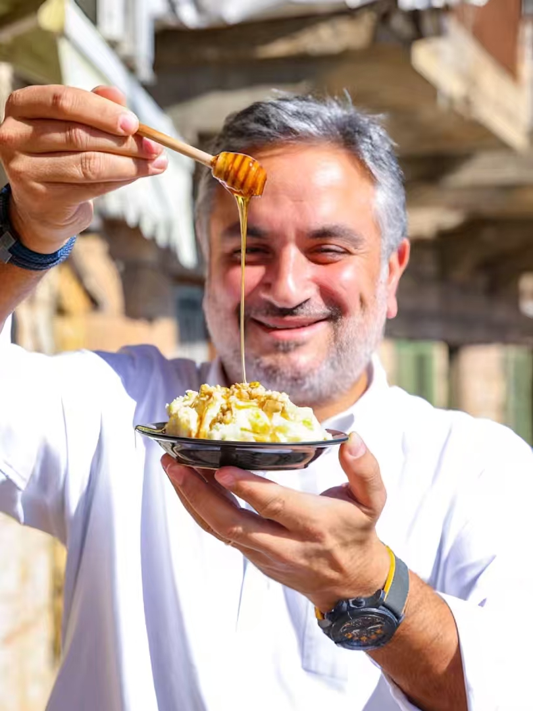
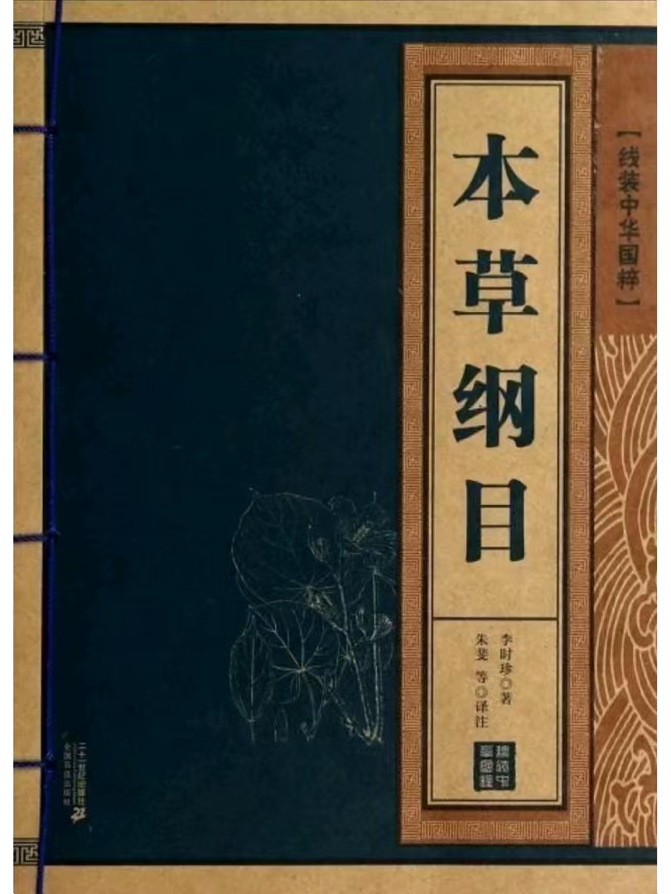

|

《小蜜蜂儿歌》《小蜜蜂儿歌》是一本适合学前儿童翻阅的读物。《小蜜蜂儿歌》秉承健康向上、快乐纯真的创作理念，题材广泛，构思精巧， 音韵流畅，童趣盎然。其内容包括长城谣、太阳公公、蜜蜂和花丛、天安门红灯照中华、祖国母亲的项链等儿歌 >>> |
|---|
蜂产品蜂产品是蜜蜂的产物，按其来源和形成的不同可分为三大类：蜜蜂的采制物。如蜂蜜、蜂花粉、蜂胶等；蜜蜂的分泌物。如蜂 王浆、蜂毒、蜂蜡等；蜜蜂自身生长发育各虫态的躯体。如蜜蜂幼虫、蜜蜂蛹等。 >>> |
|

《羊角蜜典故》古城徐州是霸王项羽建立的楚国都城。民间传说，霸王项羽率军与汉刘邦大战于九里山前，在人困马乏、饥渴难耐时，山上牧童用一只羊角盛满野蜂蜜，敬献 给楚霸王项羽及妃子虞姬饮用，饮后顿觉神清气爽、愉悦无比，霸王大喜，把随身的镶满金银珠宝的佩剑送给牧童。后来，军师范 曾命御厨坊用面粉制作成羊角形的点心，里面灌制蜂蜜、麦芽糖，成为楚王宫里的一道名点。 随着岁月的变迁，昔日楚王宫的御用名点逐步演化成古城徐州一种著名的特产点心。因为它的形状像及绵羊头顶上的那两只犄角， 又加上里面是蜂蜜加糖等料调制的糖稀，味道香香甜甜的。 >>> |
|

俄罗斯蜂蜜节俄罗斯民间将八月十四日定为“蜂蜜节”，大众可以在这天品尝到最新鲜的蜂蜜。古时候，养蜂人在八月十四日这一天会在教堂为 自己收获的第一批蜂蜜举行祝圣仪式（直到今天，信教的养蜂人依然保留这样的做法）。在古俄罗斯存在这样一个习俗：会为 婚礼特别制作浓度较低的蜂蜜酒，新人不仅会在婚宴上喝蜜酒，而且在婚礼举行后的一个月中每天都喝蜜酒和蜂蜜水。 蜂蜜不仅仅是作为简单的饮食原料出现在俄罗斯文化当中，它同样也作为一种文化的载体，向世界各国展示俄罗斯在蜂蜜中所蕴含 的民族智慧。 >>> |
|

《本草纲目》蜂蜜始载于《神农本草经》又称：“岩蜜”“石蜜”“石饴”“蜂糖”。《本草纲目》：“入药之功有五，清热也，补中也，解毒也，润燥也，止痛也。生则性凉，故能 清热；熟则性温，故能补中；甘而平和，故能解毒；柔而濡泽，故能润燥；缓可去急，故能止心腹肌肉疮疡之痛；和可致中，故能 调和百药，而与甘草同功”。 >>> |

中国训蜂史中国是世界上较早驯化蜜蜂的国家之一，早在汉代已作普遍的饮品。在《三国志》中有这样的记载：袁术称帝后遭遇众人围攻惨败，只得北上投奔庶兄袁 绍。不想在半路途中被向曹操借兵的刘备击溃。逃到寿春后，因天气炎热，袁术找庖官要蜂蜜水喝，庖官回应找不到，只有麦稃粥。 袁术大叫道：“袁术已经到了这步田地了吗?”遂吐血身亡。 >>> |